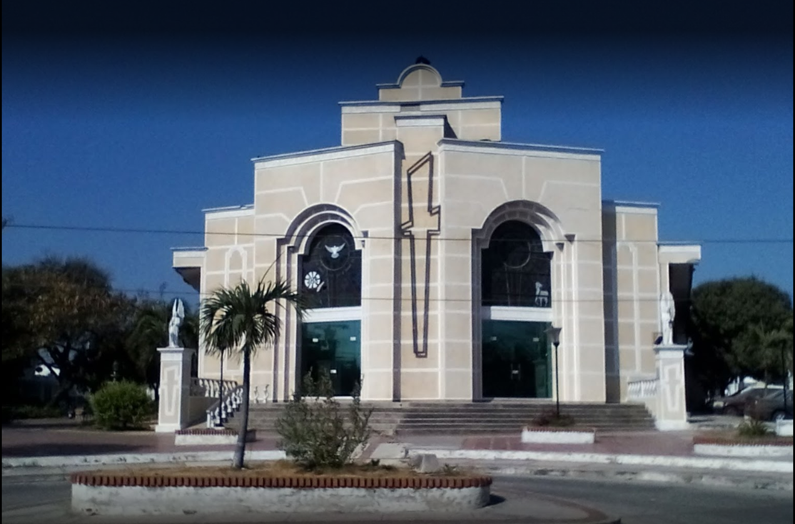

En esta fundación nos encargamos de suministrar a las personas de bajos recursos con ayudas humanitarias para aquellos que se encuentran en estos momentos solas y no tienen donde sacar el sustento diario, aunque sabemos que no es mucho intentamos dar lo mejor de nosotros para colaborarle a ellos.
En nuestra sección CONTÁCTENOS puede encontrar nuestro teléfono/celular y correo electrónico para así obtener más información de nuestra campaña y avisarnos si algún vecino, amigo, familiar, entre otras personas están pasando por una mala situación.
Nos puedes ubicar en la Cra. 7e #40-2, Barranquilla, Atlántico

Aquí hacemos las reuniones con nuestros miembros de la fundación, en el que los escuchamos para tener nuevas ideas para solucionar futuros problemas, y así lograr éxitos y mejorar poco a poco nuestra fundación.